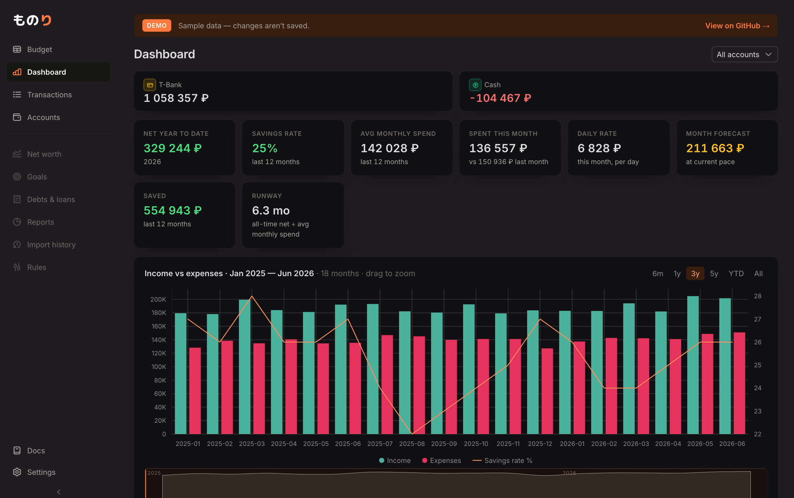
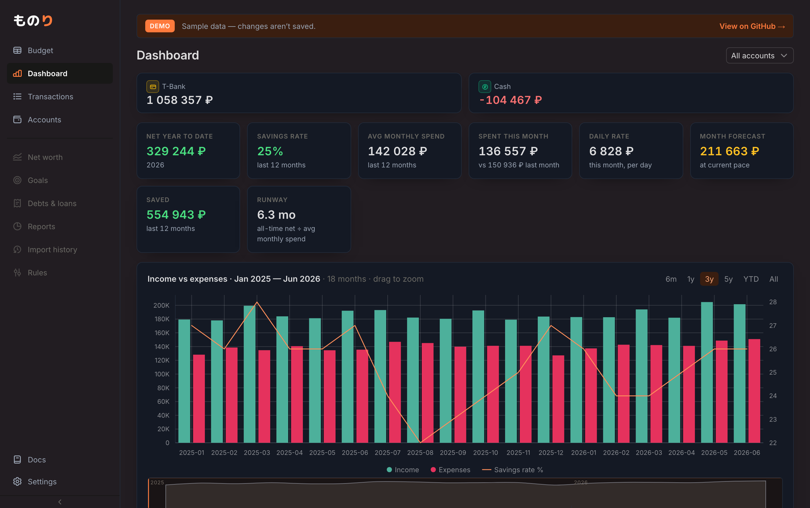
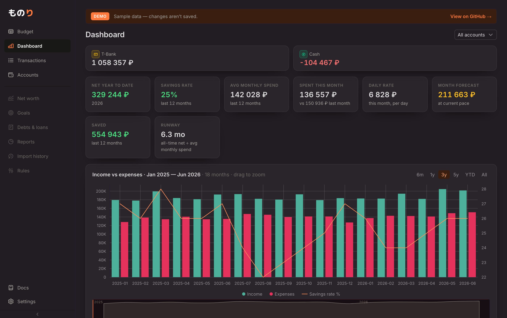
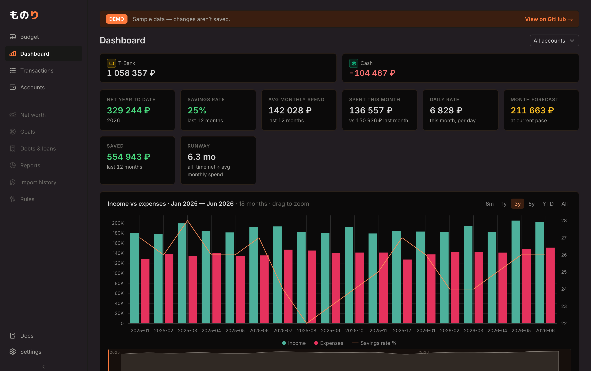
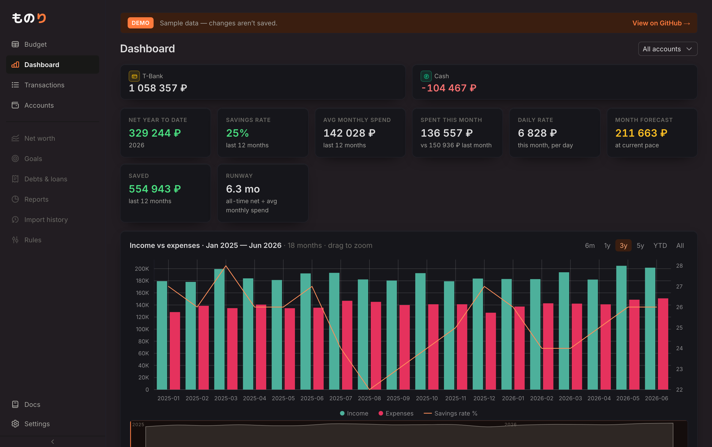

Отказалась от «заливка + рамка» и зашла через глубину: тени, градиенты, стекло,
тёплый/холодный тон. Каждое — принципиально другой характер, снято на реальном дашборде
/demo (наши цвета, шрифт, график). Скажи, какое цепляет (можно комбинировать: «C4, но
менее фиолетовый» и т.п.) — доведу и применю в theme.css.
Карточки без рамки, парят за счёт мягкой тени. Спокойно и чисто.

Холодный сине-серый тон (Linear/GitHub-настроение), оранжевый акцент контрастирует.

Тёплый почти-чёрный, карточки с лёгким градиентом. Оранжевый акцент «дома».
Тонкое фиолетовое свечение на холсте, карточки — матовое стекло. Ровно про «фиолетовый фон, который нравится».

Минимализм: чёрный холст, карточка определяется тонкой тёпло-акцентной линией.

Явная физическая глубина: тёмный холст, светлее карточки с верхним бликом и тенью.
